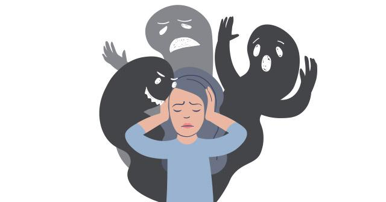

L’esquizofrènia és un trastorn mental de caràcter crònic que es caracteritza per provocar una incorrecta percepció de la vida i realitat. Les persones que pateixen esquizofrènia no poden pensar ni actuar amb la mateixa facilitat que ho fan les persones que no pateixen aquesta malaltia. Aquesta enfermetat pertany a un grup de trastorns neuropsiquiàtrics amb símptomes dispars.
